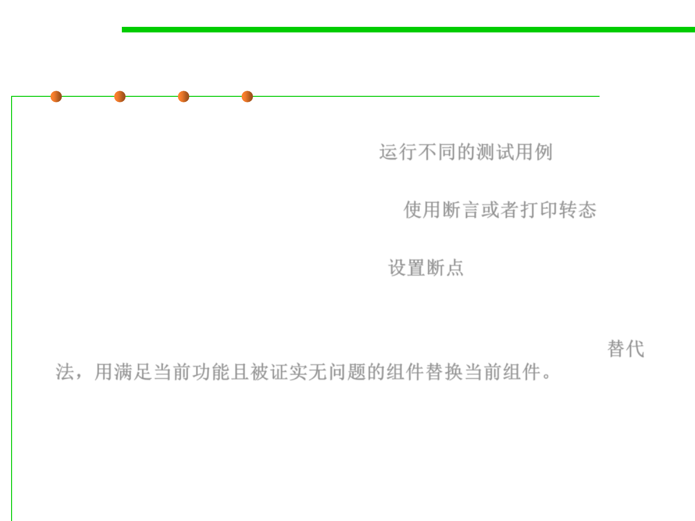

Some example experiments
7.4 Debugging
▪ Run a different test case. The test case reduction process discussed
above used test cases as experiments. 运行不同的测试用例
▪ Insert a print statement or assertion in the running program, to
check something about its internal state. 使用断言或者打印转态
▪ Set a breakpoint using a debugger, then single-step through the code
and look at variable and object values. 设置断点
▪ Swap components. If you have another implementation of a module
that satisfies the same interface, and you suspect the module, then
one experiment you can do is to try swapping in the alternative. 替代
法，用满足当前功能且被证实无问题的组件替换当前组件。